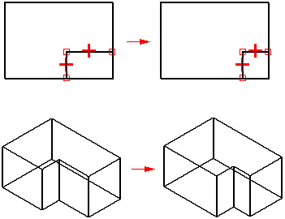
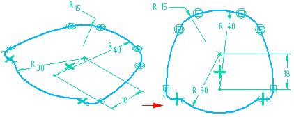

Drawing ordered profiles
Drawing ordered profiles is part of the ordered feature construction process. When you select a profile-based feature command, the command bar first guides you to define a plane to draw the profile on, and then displays a view oriented to the profile plane so that you can draw the 2D geometry easily.
For more information about 2D drawing in Solid Edge, see the Drawing 2D Elements topic.
Solid Edge makes it possible for you to design as you draw. Profile modifications are automatically reflected in the feature to which the profile belongs. Solid Edge drawing tools make the process of drawing profiles fast and accurate.

Displaying a Profile window
You can set options on the General tab of the Options dialog box so you can specify whether a new window is created when drawing profiles. When you set the Create a New Window option, a new window is created, which is oriented parallel to the profile plane. Working in the new window can make it easier for you to draw the profile, especially if you are a new user. You can draw the profile in the new Profile window or the active model window.
After you gain experience, you can set the Do Not Create a New Window—Use the Active Model Window option. When you set this option, the performance of Solid Edge is improved, since a new window does not have to be created.
When you set the Do Not Create a New Window—Use the Active Model Window option, you can also set an option that specifies whether the active model window is reoriented to the profile plane. If you do not want to reorient the window, you can clear the Orient the Window to the Selected Plane option.
Reorienting the Profile window
In some situations, reorienting the Profile window can make it is easier to visualize a complex profile's relationship to the surrounding model geometry. For example, you can use the Rotate command on the View→Orient group, or the shortcut keys to rotate the profile view to a different orientation. You can use the Sketch View command on the View→Views group to quickly rotate the profile view so that it is parallel to the screen.

Validating profiles
Each type of profile-based feature has a set of requirements for the type of profile geometry it can use. For example, a protrusion that is the base feature must have a closed profile, but subsequent features can have open or closed profiles. When you finish drawing a profile, or accept a profile you select from a sketch, the feature command checks to make sure the profile is valid for the feature type. If the profile or sketch used to create the feature is invalid, the Profile Error Assistant dialog box displays a description of the profile error. When you move the cursor over the description, the element containing the error highlights in the Profile window. You can click the error description to select the invalid element and zoom to the element, delete the element, change the color of the element, change the element to construction geometry, or save the geometry as a sketch or failed feature. You can make corrections to the profile and then click the Validate button to re-validate the profile. If the profile is valid, you are returned to the next feature creation step. If the profile still contains errors, the description list is updated to display any errors. You can also save the profile as a failed feature or sketch. Construction and reference elements are ignored during profile validation.
Undoing profiles
At some point, you may make modifications to a profile that are undesired. At this point, you do not want to finish the profile, since closing the Profile window implies you are satisfied with the profile and want to continue with the feature creation. The Undo All command lets you reset the profile to the state it was in when you entered the Profile window. You can then close the profile window without saving any unwanted changes to the profile.
Importing profiles
You can paste 2D sketches with relationships, dimensions, and variable expressions from Solid Edge Part and Draft documents into the Profile window. You can also copy profiles onto the Clipboard from the Profile window and paste them into the Draft environment.
Saving profiles
You can use the Save and Save All commands to save a profile when creating or editing a profile feature.
Saving profiles during feature creation
-
When you save a profile during the initial creation of a feature, the feature is saved as a failed feature. If you save a profile during a feature creation and then delete all profile elements and attempt to finish the profile without creating the feature, the feature is listed in PathFinder in a rolled back state. If you cancel the command before completing the feature, the feature is deleted. If you exit the file without saving, and then reopen the file, the feature appears in PathFinder as a failed feature. If you save when exiting the file, the next time you open the file you must delete the feature.
If you save a profile that would fail profile validation during feature creation, make corrections to the profile, and then finish the feature, the feature is listed as a good feature in PathFinder. However, if you exit without saving the profile, and reopen the file, the feature appears as a failed feature in PathFinder.
Saving profiles during feature edit
-
If you save a profile when you are editing a feature that was previously created and saved to a file, the feature appears as a failed feature. The feature is then treated like a failed feature. If profile validation occurs when you exit a profile after saving the profile, you will be prompted to save the profile as a failed feature and the feature will appear as a failed feature in PathFinder.
Saving unfinished profiles
If you attempt to finish a profile that is invalid for the feature you are constructing, you can close the Profile window without losing the profile geometry. If your profile is invalid, the Profile Error Assistant dialog box displays a description of the profile error.
If the feature can be saved as a failed feature or can be converted to a sketch, the Save as Failed Feature and Save as Sketch options are available. With features involving multiple profiles on separate planes, such as sweep and lofts, the feature cannot be saved as a failed feature. In these cases, you can only save the profile geometry as a sketch.